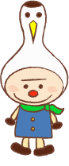

ここでは、むさしの幼稚園の保育についてご紹介します。
昭和４１年３月１８日、設立。
昭和４３年３月８日、学校法人認可。
武蔵野幼稚園は、学校法人を母体として集団生活を通じて、基本的生活習慣と豊かな情操を養い、幼児の心身の調和と発達を図る。
幼児に於ける体力作りが重要視される中、幼児の身体の適正に応じた体力作りを図り、諸機能、運動能力の調和発達に努める。
年長組では、精神統一と文字指導を兼ね、書道を正課で指導致します。
又、音楽指導としましてピアニカ、鼓笛・合奏指導を行っております。いずれも専門講師による指導を行っております。
１７年４月１日より、個人情報保護法によりダイレクトメールによる入園願書・運動会の案内を郵送することが困難となりましたので、お手数ですが、何かありましたら電話にてお問い合わせ下さい。